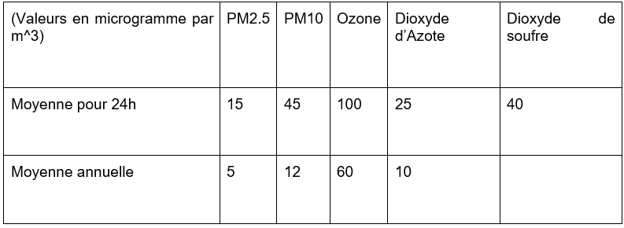

Controverse environnementale
Tout part de là. Les conséquences environnementales (émissions de gaz à effet de serre) et sanitaires (émissions de polluants) des voitures thermiques font l’objet d’un consensus scientifique qui n’est pas des plus réjouissant, remettant alors en question la légitimité des véhicules thermiques.
Mais comment ce consensus est-il établi ?
A l’origine de telles conclusions, il faut des données. Ces dernières peuvent être obtenues de plusieurs façons [1] les plus reconnues étant celles obtenues suite à un système de mesure et d’enregistrement en continu des émissions et celles découlant d’un calcul technique utilisant un facteur d’émission publié dans la documentation scientifique. Ce facteur d’émission est propre à chaque gaz à effet de serre (GES) est alors multiplié par la quantité de combustible ou de carburant associé puis sommé pour chaque GES :
Emissions de GES = ⅀Quantitécarburant/combustible× facteur d'émission
Quant à la première méthode, les émissions sont attribuées à la suite d’un test en situation réelle. Attention cependant, car de tels test peuvent être loin de la réalité [2] : le NEDC, utilisé jusqu’en 2018, pouvait présenter des écarts entre les mesures théoriques (prises après un test sur circuit et un test en laboratoire, simulant un parcours citadin) et pratiques (constatation des usagers) allant jusqu’à 40%. Heureusement ce test a été remplacé par le WLTP qui simule un parcours de 35km (contre 11km pour le NEDC), ce qui permet de vraiment rendre compte des défauts de la voiture thermique lors de successions d’accélérations. (Notez que l’agrandissement du parcours en milieu urbain avantage les voitures électriques qui sont capables d’accélérer aisément mais qui tiennent mal une vitesse élevée longtemps).
Les polluants sont quant à eux généralement évalués grâce à des analyseurs à absorption dans l’Infra-Rouge non dispersif (NDIR). Leur principe : diffuser un rayonnement composé d’onde située dans l’infrarouge à travers un milieu contenant le gaz à analyser. Ce rayonnement est alors absorbé selon la loi de Lambert-Beer en partie par le gaz, est sa mesure en sortie peut nous renseigner sur celle du gaz [3].
Finalement, afin de rendre compte des impacts globaux, plusieurs modèles peuvent être adoptés, mais ces derniers présentent toujours une analyse du cycle de vie. Cette analyse se fait sur l’ensemble de la vie du produit (production, utilisation et recyclage) et elle en ressort une quantité. Cette quantité est l’unité fonctionnelle, elle joue le rôle d’unité pour quantifier les impacts. Par exemple, l’impact d’une voiture pourrait être mesuré au kilomètre parcouru et serait calculé comme ceci :
Ikm=(IFabrication+ Ikm Utilisation*Nbrekm+ IDéchets -IRecyclage)/Nbrekm[4]
Quelles en sont les conséquences
Il découle de tout cela qu’en France, 29% des émissions de GEDS proviennent des transports. En affinant encore les secteurs, la part des émissions de CO2 provenant du transport routier est composée à 21% par les utilitaires, 22% par les poids lourds contre 54% pour les voitures. Pire encore, lorsqu’un unique passager conduit une voiture, il émet plus de gramme de CO2 au kilomètre qu’un avion. Tandis que les polluants, dans le cas des voitures thermiques, sont relâchés en ville à 57% pour les Oxydes d’azote (NOx), 12% pour les particules fines PM10 (diamètre < 10 x 10^-6 m) et 9% pour les composés organiques volatils (COV). [5]
Il y a donc double enjeu : climatique et sanitaire. Climatique car les transports sont le secteur rejetant le plus de GEDS (42% contre 23% pour le deuxième), provoquant une hausse de la température de 1.8 degré Celsius en métropole depuis 1961 :
Sanitaire ensuite puisque la liste de polluants cités au-dessus n’est pas exhaustive et si l’ozone (O3) provoque principalement du brouillard et quelques troubles respiratoires chez les asthmatiques, la plupart (Monoxyde de Carbone CO, Oxydes d’azote NOx, COV et Dioxyde d’Azote NO2) sont responsables de troubles respiratoires et cardiovasculaires ainsi que des bronchites chroniques ; tandis que le Dioxyde de Soufre (SO2) rejoint les PM10 et PM2.5 lorsqu’il s’agit d’une augmentation de la mortalité, tout en ajoutant quelques pluies d’acides et une les jours de forte concentration [6].
Que faire ?
Face à ces constats, on se doit de réagir. Mais pour faire quoi exactement ? L’objectifs souvent mentionné est celui de maintenir les émissions au seuil de la neutralité carbone, définie comme l’absorption maximale possible de GES par les océans, forêts, sols mais aussi certains dispositifs technologiques. [7]
Du côté des polluants, on assiste à plusieurs définitions, assez diverses lors de la formulation, mais qui se retrouvent lorsqu’il s’agit de donner des chiffres. Les chiffres en question, les voici, dans le cas de l’OMS [6]:
Passons à l’action maintenant. C’est à partir d’ici que les propositions divergent.
Le premier choix est d’améliorer les émissions des voitures thermiques grâce à des améliorations techniques. Ce choix est tout sauf absurde car on a observé une stagnation des émissions de CO2 depuis 2015 malgré une augmentation du trafic routier de 10% depuis 1990. [5]
Mais alors, comment faire ? Rappelons tout d’abord que la fonction d’un moteur thermique est de que sa fonction est de convertir une énergie thermique en énergie mécanique suite à une compression. Énergie thermique qui est elle-même obtenue à partir d’énergie chimique après combustion. Or est associé à la combustion une transformation chimique de forme
A Mole de Carburant + B Mole de Comburant ↦ C Mole de Produits + Enthalpie
Pour rappel, l’enthalpie est le but recherché, étant la somme de l’énergie interne et du produit du volume par la pression, tandis que les carburants sont divers (hydrocarbures, éthers, alcools…) mais les comburants (qui doivent se mélanger avec le carburant) utilisés sont au nombre de 1 : le dioxygène. Cependant, tous les composants de l’air sont utilisés pour donner :
CnHmOrSpNq...+ O2 +N2+Ar+...↦ Ca Hb +CO+CO2+O2+H2O+...+∆H
où l’on retrouve le fameux CO2. [3]
Jusqu’alors, les améliorations portaient principalement sur le design de la voiture : on a le downsizing (procédé de réduction du cylindré d’un moteur qui permet d’améliorer le ratio puissance/litre afin de diminuer la consommation de carburant et les émissions de gaz toxiques), turbocompresseur (permet d’injecter plus d’air dans le moteur, de manière à augmenter la puissance du moteur ou à diminuer la quantité de carburant consommé), alliage réfractaire (mélange de métaux résistant à la chaleur et l’usure), injection directe à haute pression (le carburant est directement injecté dans la chambre de combustion du moteur, ce qui permet de consommer moins en injectant le moins de carburant possible et en modulant l’injection selon des paramètres extérieurs tels que la pression, la température, le régime moteur).
On peut aussi réduire le poids des véhicules (par un bloc moteur en aluminium ou des collecteurs d’air en matière plastique) bien que cela ait des répercussions sur le design et confort de la voiture et donc, de sa mise en vente/usage. [5]
Mais on commence à voir apparaître des pistes d’améliorations liées au carburant, ce qui n’avait pas lieu pour des problèmes d’adaptation du moteur. Ces nouveaux carburants sont l’amoniac et les biocarburants. Avantages : l’ammoniac est abondant, le biocarburant très efficace. Inconvénients : peu compétitifs (gros inconvénient dans l’industrie) et demandeur de place pour cultiver les plantes à l’origine du biocarburant. [8]
Le point de vue technologique opposée est celui de la voiture électrique. Cette dernière est alimentée grâce à une batterie, dont le principe est de faire transiter les charges électriques entre une anode et une cathode (interfaces positives ou négatives) dans un sens pour la charger, dans l’autre pour mettre la voiture en mouvement. L’argument phare de cette technologie est le zéro émissions de GES lors de la conduite. Cela est vrai mais en utilisant le concept d’analyse de vie, on se rend compte que la production de la batterie (composée de métaux rares) a un impact environnemental désastreux, tels que la pollution des nappes phréatiques de paysans Chiliens et Boliviens [5]. De plus, du côté des polluants, la voiture électrique n’est pas neutre, car les pneus, freins et suspensions sont producteurs de polluants :
Finalement, la production de l’électricité est aussi en cause : rouler avec de l’électricité produite par du charbon n’est pas un acte des plus écologiques. Alors si la France, avec ses 70.6% de production électrique provenant du nucléaire (qui ne rejette pas de CO2) n’a pas ce problème, la situation mondiale est toute autre, l’Allemagne, la Pologne et la Chine en sont de bons exemples :
Cela dit, tout comme pour le thermique, les technologies évoluent et on observe des améliorations au niveau de la composition des batteries, de leur recyclage et de leur durabilité. En effet, ces dernières étaient majoritairement composées de Lithium, Nickel, Cobalt et Manganèse (batteries NMC) avant d’être remplacées par les batteries LPF (lithium phosphate de fer) afin de se débarrasser du Cobalt qui était miné dans des conditions affreuses en République Démocratique du Congo. Il reste cependant le lithium et l’on peut avoir bon espoir de le remplacer par des batteries au sodium, élément abondant et chimiquement proche mais plus dense. C’est d’ailleurs ce que va faire le plus grand fabricant de batteries, CATL, en 2023. [9]
Quant au recyclage des batteries, il se déroule en plusieurs étapes : démontage, broyage des éléments internes puis récupération des métaux après les avoir fondus (pyrométallurgie). Ces procédés permettent de recycler jusqu’à 65% des batteries au lithium et 85% du cobalt [10]. La durabilité se traduit par le nombre de cycles de charges et de décharges dont sont capables les batteries. Le graphique suivant montre les progrès des batteries LPF à ce niveau :
On pourrait aussi mentionner les prometteuses voitures à hydrogène basées sur la technologie de pile à combustion (on retrouve la structure d’anode et de cathode mais cette fois le transfert des charges se fait en acheminant un combustible du réservoir : le dihydrogène). On y retrouve toujours la problématique de la provenance du dihydrogène (est-il propre ?) et des matériaux rares dans la pile, ce qui en fait une technologie du futur mais qui n’a pas vraiment sa place dans le débat actuel. [11]
Sources:
[1] LégisQuébec, (1er juin 2022). Chapitre Q-2, r. 15 « Règlement sur la déclaration obligatoire de certaines émissions de contaminants dans l’atmosphère ».
[2] Nicolas Raillard, (Février 2020). « ÉTUDE COMPARATIVE DE L'IMPACT CARBONE DE L'OFFRE DE VÉHICULES » The Shift Project
[3] Luis Le Moyne, (s.d.). « Introduction aux moteurs thermiques » Université Pierre et Marie Curie
[4] Christine Buisson et Serge Pelissier, (19 janvier 2022). « Impacts environnementaux des véhicules thermiques, électriques, autonomes ou automatisés : Comment les quantifier ? » Université Gustave Eiffel.
[5] Bernier, Jean-Claude, (s.d.). « Nouveaux véhicules électriques et thermiques : quel impact sur l’environnement ? »
[6] Organisation Mondiale de la Santé, (22 septembre 2021). « Pollution de l’air ambiant (extérieur) » OMS
[7] Aleksandar Rankovic, Michel Colombier et al, (septembre 2018). « La neutralité carbone, défis d’une ambition planétaire » ADEME
[8] Christine Rousselle, (s.d.). « L’Ammoniac : un combustible pour une décarbonisation partielle ou totale des systèmes énergétiques : enjeux – verrous » Université d’Orléans
[9] Pierre Langlois, (5 décembre 2022). « Les nouvelles batteries au phosphate de fer sans nickel ni cobalt » roulez électrique.com
[10] EDF, (29 mai 2020). « Recyclage des batteries de voitures électriques : où en est-on ? »
[11] Nizar Doss. Plaques bipolaires dans une pile à combustible à membrane : effet du design sur les performances et recherche de matériaux métalliques adaptés. Autre. Institut National Polytechnique de Lorraine, 2008. Français.